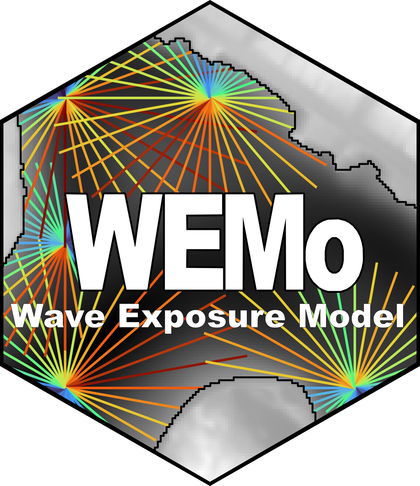
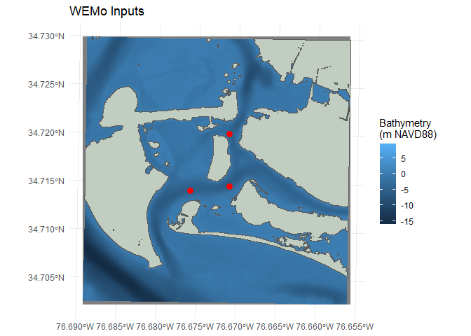
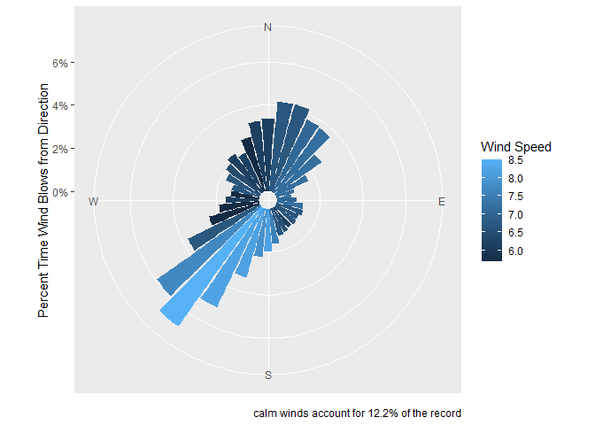
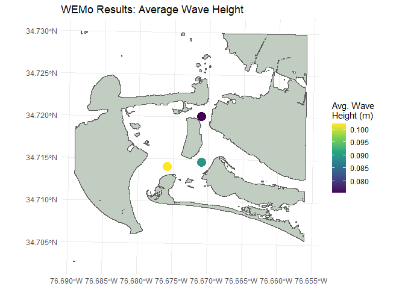
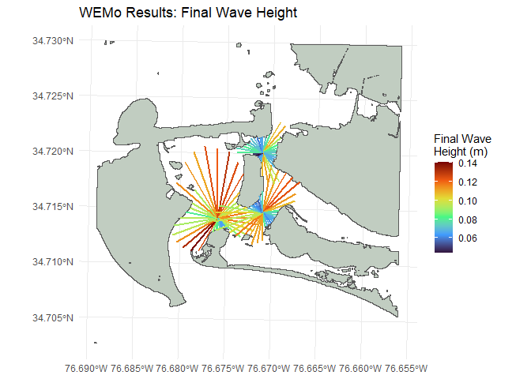

An R Implementation of the Wave Exposure Model

WEMo (Wave Exposure Model) is an R package that implements a simplified hydrodynamic model to quantify wind-wave exposure in coastal and inland waters. It uses linear wave theory to estimate wave height and energy, accounting for local water depth effects like shoaling and wave breaking. It combines wind data, shoreline geometry, and bathymetry to estimate wave conditions through a reproducible and scriptable workflow in R.
This package provides a modern, open-source, and accessible implementation of the original WEMo, which was developed by NOAA’s Center for Coastal Fisheries and Habitat Research and previously required a proprietary plug-in for ESRI’s ArcMap software. As the original tool is no longer compatible with modern GIS software, this R package provides a sustainable and license-free path forward for researchers and resource managers.
Key Features
Quantitative Wave Exposure: Calculates wave height and Representative Wave Energy (RWE) based on wind, fetch, and bathymetry.
Data Preparation Tools: Includes convenience functions to download and prepare input data, such as historical wind observations from NOAA’s [Global Historic Climate Network hourly] dataset (
get_wind_data()) and bathymetry from NOAA’s [Continuously Updated Digital Elevation Model]{https://www.ncei.noaa.gov/products/coastal-elevation-models} dataset (get_noaa_cudem()).Flexible Inputs: Works with standard R spatial objects (
sfandterra), allowing users to easily integrate their own data.Scenario Modeling: Designed for efficient re-analysis, making it easy to model the effects of changing conditions like sea-level rise or different wind regimes.
Visualization: Integrates with
ggplot2to help visualize inputs and results.
Installation
You can install the development version of WEMo from GitHub with:
# If you don't have the 'remotes' package, install it first
# install.packages("remotes")
remotes::install_github("MSE-NCCOS-NOAA/WEMo")Example Workflow
This is a basic workflow demonstrating how to run the model using the package’s built-in example data. The example data are located in the immediate area around the NOAA Beaufort Lab on Pivers Island in Beaufort, North Carolina.
2. Load the package’s example data
A suite of example data is included with WEMo. The data are from the area around Pivers Island, Beaufort, North Carolina. They include:
-
PI_points: 3 site points. AsfPOINT object. -
PI_shoreline: a polygon of the Mean Higher High Water shoreline (0.522 m NAVD88). AsfMULTIPOLYGON object. -
PI_wind_data: hourly wind history from a nearby weather station. Atibble. -
PI_bathy: a topobathy raster storing elevations in m NAVD88. ASpatRaster,
# read in the topobathy
PI_bathy <- terra::rast(x = system.file("extdata", "PI_bathy.tif", package = "WEMo"))
# Plot input spatial data
ggplot() +
geom_spatraster(data = PI_bathy) +
geom_sf(data = PI_shoreline, fill = "honeydew3") +
geom_sf(data = PI_points, color = 'red', size = 3) +
labs(title = "WEMo Inputs",
fill = "Bathymetry\n(m NAVD88)") +
theme_minimal()
#> <SpatRaster> resampled to 500556 cells.
# WEMo needs a summary of wind speed and proportion by direction
wind_summary <- summarize_wind_data(
wind_data = PI_wind_data,
wind_percentile = 0.95, # Use 95th percentile wind speed
directions = seq(0, 350, by = 10) # Bin directions into 10-degree increments
)
# create and print wind rose
plot_wind_rose(wind_data = wind_summary)
4. Run the full WEMo model
wemo_results <- wemo_full(
site_points = PI_points,
shoreline = PI_shoreline,
bathy = PI_bathy,
wind_data = wind_summary,
max_fetch = 10000, # Max distance (m) to calculate fetch
water_level = 0.552 # Water level (m) relative to bathy vertical datum
)5. Examine and plot final results
print(wemo_results$wemo_final)
#> Simple feature collection with 3 features and 9 fields
#> Geometry type: POINT
#> Dimension: XY
#> Bounding box: xmin: 346536.4 ymin: 3842620 xmax: 346986.4 ymax: 3843270
#> Projected CRS: NAD83 / UTM zone 18N
#> # A tibble: 3 × 10
#> site RWE avg_wave_height max_wave_height direction_of_max_wave avg_fetch
#> <int> <dbl> <dbl> <dbl> <chr> <dbl>
#> 1 1 31.6 0.102 0.141 220 443.
#> 2 2 22.8 0.0894 0.124 50 355.
#> 3 3 10.1 0.0755 0.112 170 257.
#> # ℹ 4 more variables: max_fetch <dbl>, avg_efetch <dbl>, max_efetch <dbl>,
#> # geometry <POINT [m]>
# Plot the average wave height at each point
ggplot() +
geom_sf(data = PI_shoreline, fill = "honeydew3") +
geom_sf(data = wemo_results$wemo_final, aes(color = avg_wave_height), size = 5) +
scale_color_viridis_c() +
labs(title = "WEMo Results: Average Wave Height",
color = "Avg. Wave\nHeight (m)") +
theme_minimal()
# Plot the wave height of the wave arriving at the site from each fetch ray
ggplot() +
geom_sf(data = PI_shoreline, fill = "honeydew3") +
geom_sf(data = wemo_results$wemo_details, aes(color = wave_height_final), linewidth = 1) +
scale_color_viridis_c(option = "H") +
labs(title = "WEMo Results: Final Wave Height",
color = "Final Wave\nHeight (m)") +
theme_minimal()
Gathering Your Own Data
WEMo provides several functions to help you acquire and prepare the necessary input for your area of interest
Wind Data: Download historical wind data from NOAA’s Global Historical Climatology Network hourly (GHCNh) using
get_wind_data().Bathymetry Data: Fetch bathymetric rasters from NOAA’s CUDEM dataset using
get_noaa_cudem().Shoreline Polygon: Generate a shoreline from a bathymetry raster using
generate_shoreline_from_bathy().Site Points: Create a regular grid of points for analysis using
generate_grid_points().
For a detailed, step-by-step tutorial on using these functions, please see the “Gathering Input Data for WEMo” article.
Citing WEMo
If you use WEMo in your research, please cite both the R package and the original publications that describe the model’s methodology.
Walker, Q.A. (2024). WEMo: An R Implementation of the Wave Exposure Model. R package version 0.1.0.9000 https://github.com/MSE-NCCOS-NOAA/WEMo
Malhotra, A., & Fonseca, M. S. (2007). WEMo (Wave Exposure Model): Formulation, Procedures and Validation. NOAA Technical Memorandum NOS NCCOS 65. 28 pp.
Legal Disclaimer
This repository is a software product and is not official communication of the National Oceanic and Atmospheric Administration (NOAA), or the United States Department of Commerce (DOC). All NOAA GitHub project code is provided on an ‘as is’ basis and the user assumes responsibility for its use. Any claims against the DOC or DOC bureaus stemming from the use of this GitHub project will be governed by all applicable Federal law. Any reference to specific commercial products, processes, or services by service mark, trademark, manufacturer, or otherwise, does not constitute or imply their endorsement, recommendation, or favoring by the DOC. The DOC seal and logo, or the seal and logo of a DOC bureau, shall not be used in any manner to imply endorsement of any commercial product or activity by the DOC or the United States Government.
License
Software code created by U.S. Government employees is not subject to copyright in the United States (17 U.S.C. §105). The United States/Department of Commerce reserve all rights to seek and obtain copyright protection in countries other than the United States for Software authored in its entirety by the Department of Commerce. To this end, the Department of Commerce hereby grants to Recipient a royalty-free, nonexclusive license to use, copy, and create derivative works of the Software outside of the United States.
Section 508
The National Ocean Service is committed to making its website accessible to the widest possible audience, including people with disabilities, in accordance with Section 508 of the Rehabilitation Act (29 U.S.C. 794d).
Section 508 is a federal law that requires agencies to provide individuals with disabilities equal access to electronic information and data comparable to those who do not have disabilities, unless an undue burden would be imposed on the agency.
The Section 508 standards are the technical requirements and criteria that are used to measure conformance within this law. More information on Section 508 and the technical standards can be found at Section508.gov.